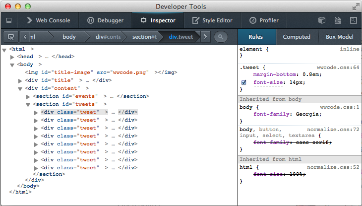
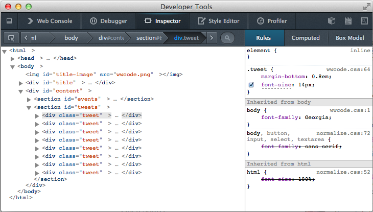
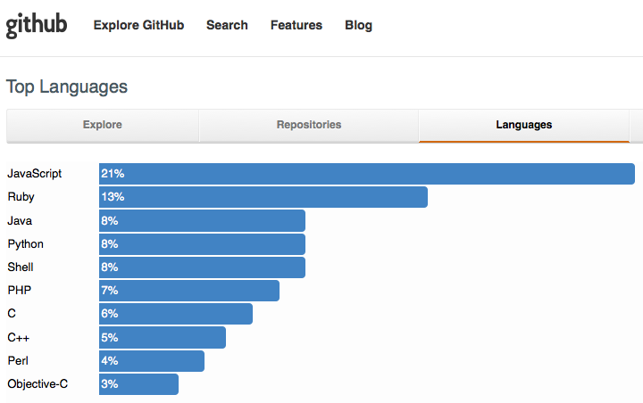

Passion Project
Machine Learning in JavaScript
Heather Arthur
@harthvader
github/harthur

 

Machine Learning
ML applications
- spam filtering
- face detection
- recommendations
- character recognition
- traditional computation: hand-chosen conditionals and params
- ML algorithms: rules are learned from data
JavaScript
The Problem
Should I bother?...
Does it have cat pics?
 ???
???
Cat Detection

Breaking it down
does this image contain a cat?

Breaking it down
is this section a cat head?